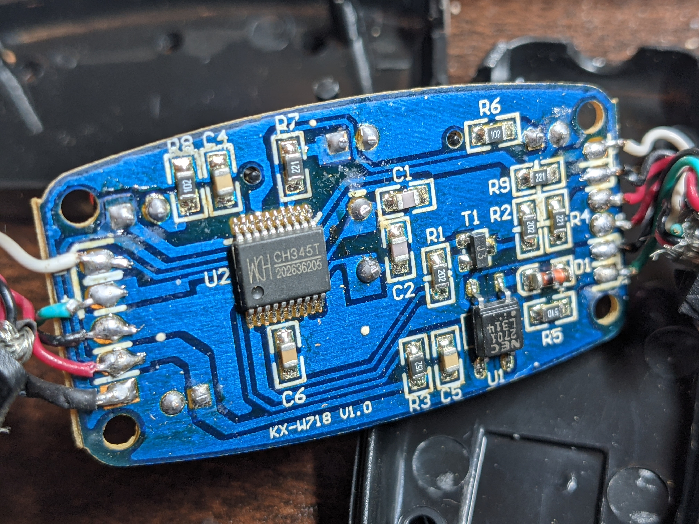
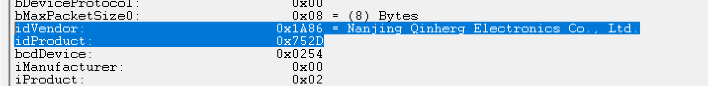
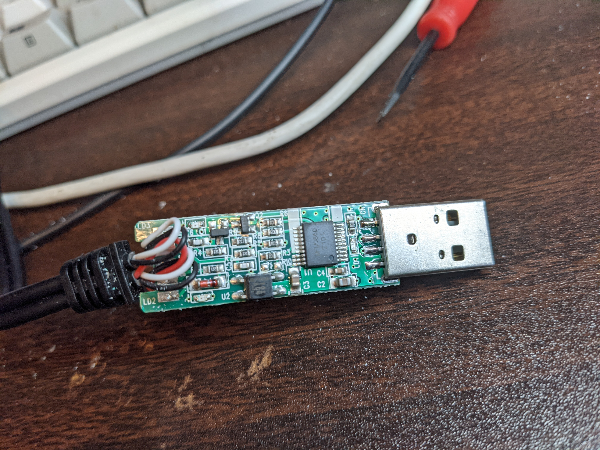
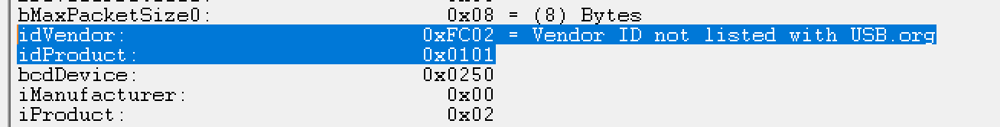

amazonで販売されている、かなり安い値段のUSB MIDIインターフェースはあまりオススメできないです。 理由は3つあります。
- 見た目が同じでも、中身が同じとは限らない
- 素性が不明のICが使われている場合がある
- 回路がまちがっていることがある
私が最初に買ったのがこれで、こちらは(自分の環境では)問題なく動作しました。現在は購入できない模様。 9℃(クドシー) Basic USB-MIDI Cable
次に、最近買ったやつがこれ N\A MIDIケーブル 高互換性 MIDI-USBインターフェース簡単接ケーブル 楽器 MIDI ケーブル USBインター MIDI IN-OUTコンバーター PCのUSBに音楽キーボード変換器アダプタオ電子ドラム/シンセサイザー適用 接続オーディオトラックの編集と録音 N\A というブランド名もあやしい・・・
これは、note onをときどき取りこぼすし、note offは1つも受信できない、という結果になりました。
上の2つは外装が一緒なので、買うまで動くかどうかがわかりません。
興味が出てきたので、中の基板を見てみました。
9℃の方がこれ。 
ここで使われているICはCH345Tで、中華Arduino等で使われているCH340と同じメーカーのICです。alldatasheetなどにデータシートもあります。aliexpressなどで普通に購入できます。なんとなく買ったので来たら実験したりしようと思います。今回試したものの中では、一番まともだと思います。まともと言っても、中華Arduinoがまともか？みたいなレベルのまともさかもしれません。人によると思います。
動かなかった方をバラしてみると、こうなってました。

中身がまるで違います。気になる点はいくつかあるのですが、まずICの"CJS1039B"で検索しても、データシートらしきものは出てきません。 同じようにバラしている過去の先人の記事などがあり、参考になります。 windows上でUSBViewを使うと、このICは「私はCH345Tである」という応答をします。
 つまり、USBコネクタを接続してPC等で確認したところで、まともに動くものとの区別はできません。ちなみにCH345Tのメーカーが"Nanjing Qinherg…“となっているのはおそらくUSBView側のtypoで、“Nanjing Qinheng…“が正解だと思います。
次に、上記の先人が指摘している通り、フォトカプラがMIDI INに入っていません。MIDI INの回路として規格に準拠していません。そりゃまともに動かないだろ・・・という感じです。
基板の右端にGNDと書いた部分がありますが、ここはハンダで埋まっているだけで、何もつながっていません。つまり、MIDIケーブル側のシールドがどこにも接続さていません。これも通信が不安定になる要素だとおもいます。そもそも、回路がまちがっているのでこの指摘にはあまり意味がないかもしれません。
ここまで間違っているものも珍しい気がしますが、2つ買ったので、バラしていない方は返品しました。
おもしろくなってきたので、見ためも違うWELVME MIDI ケーブル USB インターフェース MIDI USB コード 電子楽器とPC 簡単接続 キーボード ケーブル ミディケーブル 1 in 1 out 高伝送効率 変換ケーブル2M インストール不要 高互換性 MIDI Cable 楽器用も買ってみました。
こちらは問題なく動作しました。 そしてバラしました。

 ここで使われているICはMFM0860という物のようです。このICもあまり買えなさそうで、型番で検索するとバラしている過去の先人(さっきとは別の人)の記事が見つかります。データシートがそこに置いてあるので中身を見てみると、CH345Tとはピン配置なども異なるようです。
ここで使われているICはMFM0860という物のようです。このICもあまり買えなさそうで、型番で検索するとバラしている過去の先人(さっきとは別の人)の記事が見つかります。データシートがそこに置いてあるので中身を見てみると、CH345Tとはピン配置なども異なるようです。
ちなみに、これをPCに接続してみたところ、USBViewでの表示はこのようになりました。  残念ながら、不明なベンダーIDとなってしまいます。
このように、買ってきただけでは動かなかったり、運よく動いたり、動いても何者かよくわからなかったりします。 そして、普通USB MIDIケーブルを買ってきて使うというのは、ここまで私がやってきたように、中身をバラしたりする行為ではなく、 何かしらの楽器を鳴らしたいなどの目的があると思います。その場合はこの段階で時間をかけたり、運の良さに賭けてみたりするよりは、確実に動くものを購入することをオススメします。twitterでも例に挙げましたが、たとえばRolandさんのUM-ONEなどです。